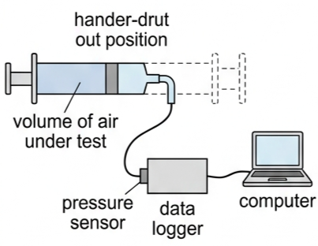
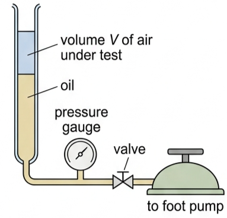
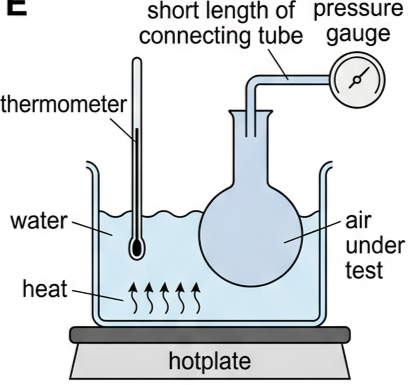
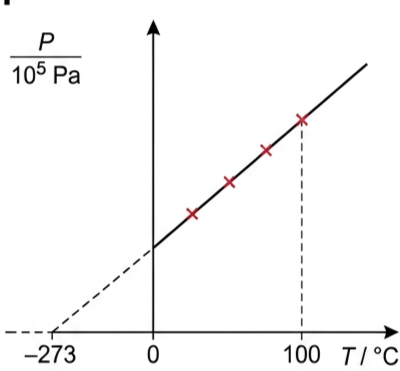
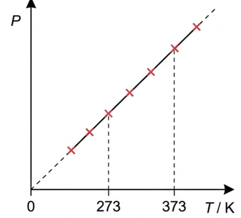
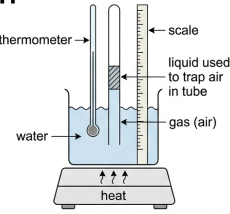
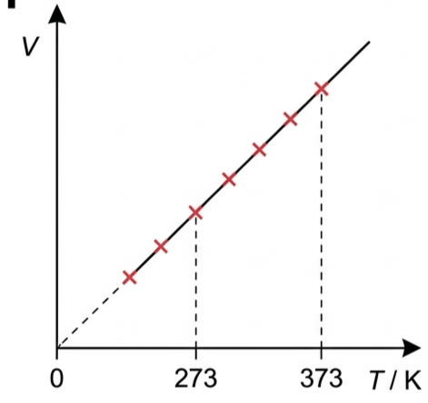
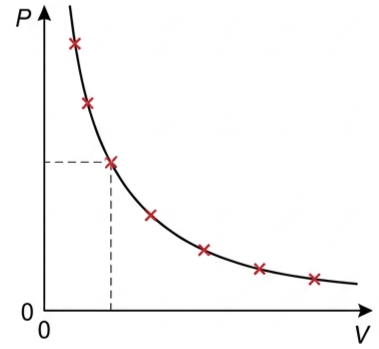
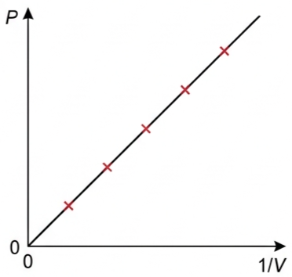
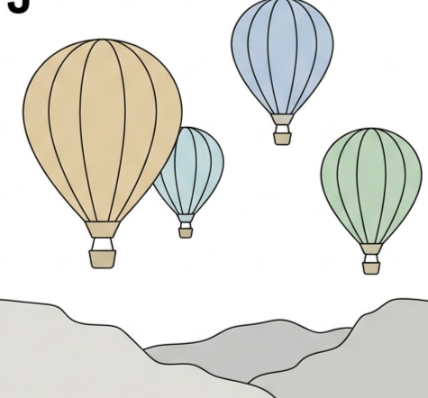

💉 Hook – block the end of a syringe and push
Seal the nozzle of a syringe with your finger and push the plunger in. At first it moves easily. The further in you push it, the harder it gets to push — and if you let go, it springs straight back out. You have trapped a fixed amount of gas and shrunk its volume, and its pressure has risen to fight back. This is exactly the apparatus used to investigate the relationship properly.

🧪 Three classic gas law investigations
A sealed container of gas has four physical properties that are easily measured: pressure, volume, temperature and mass (\(P\), \(V\), \(T\) and \(m\)). The amount of gas in moles, \(n\), can be found from its mass. All gases show the same behaviour under most conditions, so air is the obvious choice for experiments.
Each of the three classic investigations below keeps the amount of gas fixed and holds one further variable constant while the other two are measured:
— How does volume change with pressure, at constant temperature? (Boyle's law)
— How does pressure change with temperature, at constant volume? (pressure law)
— How does volume change with temperature, at constant pressure? (Charles' law)
📉 Boyle's law — pressure and volume at constant temperature
Figure 2 shows apparatus for investigating how pressure affects the volume of a fixed mass of gas at constant temperature. Compressing a gas does work on it and tends to raise its temperature, so changes must be made slowly to keep the process isothermal (occurring at constant temperature).

A plot of \(P\) against \(V\) gives a downward curve, called an isotherm because every point is at the same temperature. Re-plotting \(P\) against \(1/V\) gives a straight line through the origin, showing that pressure and volume are inversely proportional.
Molecular explanation: shrink the container and the molecules (moving at the same average speed) hit a given area of wall more often each second, so the pressure rises.
🌡️ Pressure law — pressure and temperature at constant volume
Figure 3 shows apparatus for this investigation: a sealed flask of air, immersed in a water bath, with a thermometer and a pressure gauge. Measurements are usually taken between 0°C and 100°C.

The raw results form a straight line of pressure against temperature in degrees Celsius (Fig 4) — but it does not pass through the origin.


Every gas extrapolates to the same value, \(-273^{\circ}\text{C}\): the temperature at which molecular motion is assumed to (almost) stop and molecules no longer collide with the walls. This is absolute zero, the lower fixed point of the Kelvin scale — \(0\ \text{K}\).
Molecular explanation: cooling the gas slows the molecules, so they hit a given area of wall less often, lowering the pressure.
🎈 Charles' law — volume and temperature at constant pressure
Figure 6 shows a beaker of water heated from below, with an open-ended tube of trapped air immersed in it. A liquid plug traps the air in the tube and a scale beside the tube reads its volume; as the gas warms it pushes the plug along, keeping its pressure equal to the atmosphere outside.

The concluding graph (Fig 7) is a straight line through the origin, just like Fig 5.

Molecular explanation: cooling the gas slows the molecules, so they would hit a given area less often — but shrinking the volume too keeps the collision rate, and so the pressure, constant.
📈 Graph mastery – the three gas laws
| Graph type | Axes (X, Y) | Shape | What to read |
|---|---|---|---|
| Boyle's law | Volume \(V\) · Pressure \(P\) | Downward curve (isotherm) | \(PV\) is the same at every point on the curve |
| Boyle's law, linearised | \(1/V\) · Pressure \(P\) | Straight line through the origin | Confirms \(P \propto 1/V\); gradient is the constant \(PV\) |
| Pressure law | Temperature \(T/^{\circ}\text{C}\) · Pressure \(P\) | Straight line, does not pass through the origin | Extrapolated intercept on the \(T\) axis is \(-273^{\circ}\text{C}\), absolute zero |
| Charles' law | Temperature \(T/\text{K}\) · Volume \(V\) | Straight line through the origin | Confirms \(V \propto T\) when temperature is measured in kelvin |


✍️ Worked example 1 – Boyle's law (B3.4)
A sample of gas has a volume of 43 cm³ at normal atmospheric pressure (\(1.0\times10^{5}\)Pa). (a) If the pressure is increased to \(3.7\times10^{5}\)Pa, calculate its new volume. (b) State the assumption made in (a).
\((1.0\times10^{5})\times 43 = (3.7\times10^{5})\times V_2\)
(b) The temperature of the gas did not change.
✍️ Worked example 2 – pressure law (B3.5)
Some air in a sealed container was heated from 60°C to 92°C. If its final pressure was \(1.82\times10^{5}\)Pa, determine its pressure at 60°C.
\(\dfrac{P_1}{333} = \dfrac{1.82\times10^{5}}{365}\)
✍️ Worked example 3 – Charles' law (B3.6)
In an experiment such as Fig 6, the gas temperature was increased from 5.0°C to 95.0°C. If the initial volume was 3.1 cm³, calculate the final volume.
\(\dfrac{3.1}{278} = \dfrac{V_2}{368}\)
🎈 Real-world: why a hot air balloon rises and falls
The balloon's envelope is open at the base, so the trapped air inside stays at roughly atmospheric pressure — the same condition as Charles' law. Heating the air with the burner raises its temperature, so (at constant pressure) it expands and some spills out of the open base, lowering the mass of air inside the envelope. The remaining hot, less dense air weighs less than the same volume of cool air outside, so the buoyant force from the surrounding air exceeds the balloon's weight and it rises. Letting the air inside cool (or venting some through a vent at the top) raises its density back up, reducing the buoyant force so the balloon descends.

🚀 HL extension – combining the three laws
The three empirical laws can be combined into one: for a fixed amount of gas, \(PV \propto T\), so \(PV/T\) is constant.
This single equation reduces to Boyle's, the pressure law or Charles' law whenever one of \(P\), \(V\) or \(T\) happens to be constant. It is also the direct forerunner of the ideal gas equation, \(PV=nRT\), met in the next lesson.
Challenge: a fixed mass of gas at \(1.0\times10^{5}\)Pa, 2.0 m³ and 300K is compressed to 1.2 m³ while its temperature rises to 360K. Find its new pressure. Answer: \(\dfrac{(1.0\times10^{5})(2.0)}{300} = \dfrac{P_2(1.2)}{360}\), so \(P_2 = 2.0\times10^{5}\)Pa.
⚠️ Trap corner – common mistakes
| Misconception | Correct view |
|---|---|
| A gas's volume always increases when its temperature rises | Only if it is allowed to, at constant pressure (Charles' law). At constant volume, the pressure rises instead (pressure law) |
| Celsius temperatures can be substituted straight into \(P_1/T_1=P_2/T_2\) or \(V_1/T_1=V_2/T_2\) | Always convert to kelvin first: \(T(\text{K}) = T(^{\circ}\text{C}) + 273\) |
| Extrapolating the \(P\)–\(T\) line to \(-273^{\circ}\text{C}\) is unreliable guesswork | It is a narrow, specific extrapolation — asking only at what temperature the existing trend would reach \(P=0\), not predicting general gas behaviour there |
| Pressure and volume are directly proportional | Boyle's law says they are inversely proportional: \(P \propto 1/V\) |
Complete the statements:
✓ \((1.0\times10^{5})V_1 = (4.5\times10^{5})(280)\), so \(V_1 = 1260\ \text{cm}^3\).
✓ \(110/353 = V_2/293\), so \(V_2 \approx 91\ \text{cm}^3\).
✓ \((1.2\times10^{5})/310 = (1.9\times10^{5})/T_2\), so \(T_2 \approx 491\ \text{K}\).
✓ In °C: \(491 - 273 = 218^{\circ}\text{C}\).